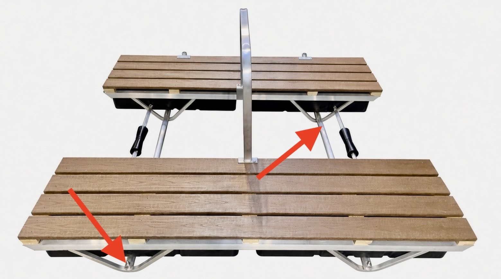

感谢您购买 Mr. Launcher 2.0 皮划艇下水码头！
开始之前，请阅读所有说明并观看帮助视频。
帮助视频：youtube.com/@amdocks
更多图片和信息：www.AmericanMuscleDocks.com
预期用途 - 每次仅限一人
本款家用下水码头旨在为您提供更方便地上下皮划艇的通道。
本款家用皮划艇下水码头并非浮动码头，每次只能由一人使用。请按照说明进行正确且安全的安装。

CAPTAIN DOCKY 的提示：
- 1组装前请通读所有说明。
- 2在干净、平整、干燥的工作区域内拆包并摆放所有零件和五金件。
- 3开始之前，请对照清单确认套件齐全。
- 4备好工具，享受安装过程。
箱内物品
套件清单
- 2’ x 8’ 浮动平台2
- 铝制扶手杆1
- 铝制管支撑 — 1.5” 管材，长 7’2
- 铝制方管稳定杆 — 已装配橡胶 V 型滚轮和螺栓2
螺栓包
- 管支撑 — 3/8 x 4” 不锈钢螺栓及润滑脂8
- 方管稳定杆 — 3/8 x 3” 不锈钢螺栓4
- 扶手杆 — 3/8 x 5” 全螺纹螺栓2
- 扶手杆 — 3/8 x 1.5” 全螺纹螺栓2
- K.K. 管座 — 3/8 x 1 ¼” 马车螺栓2
- K.K. 管座 — 3/8 x 4” 马车螺栓4
- K.K. 甲板支架 — 1/2 x 3” 马车螺栓8
安装管支撑时，请在 3/8 x 4” 不锈钢螺栓的螺纹上涂抹润滑脂。
四步安装
所需工具
实用提示
1
安装铝制管支撑
- 将两块浮动平台相距大约 3’ 摆放。*务必让带有中央预钻孔（用于扶手杆）的一侧彼此相对。
- 将铝制管支撑放入（置于）浮动平台上 “V’s” 形托座的内侧，并用 3/8 x 4” 不锈钢螺栓（务必在螺纹上涂抹随附的润滑脂）固定。螺栓应从 V 形托座底部自下向上穿过 V 形托座和铝管，螺母位于上方。
- 将全部 (8) 颗螺栓穿过管支撑和铝制平台框架上的预钻孔并轻轻拧上。完成 (第 3 步) 后再完全拧紧。

2
安装方管稳定杆
- 用 (4) 颗 3/8 x 3” 螺栓将带橡胶 V 型滚轮的方管稳定杆安装到两段码头之间的每个内侧端部。先装上两根稳定杆并用手拧紧，直到完成 (第 3 步)。
** 铝制 V 形托座上已预先钻孔，该位置适合大多数皮划艇搁置在橡胶滚轮上。 部分皮划艇的船底形状不同，可能需要重新钻孔，以便将该支架上移或下移。阻力适中即可，既能让您顺利上下皮划艇，又不会让皮划艇晃动过大。我们按照适合大多数皮划艇船底的常见高度设定孔位，使滚轮能够夹住皮划艇，停靠时不会漂走。

3
安装铝制扶手杆
将铝制扶手杆安装在两块浮动平台内侧的正中位置。扶手杆的上下两端均有预钻孔（请与平台上的预钻孔对齐）。如果孔位无法完全对齐，可能需要松开先前安装的铝制管支撑或方管稳定杆上的部分螺栓。
拧紧螺栓
- 每个支架从上方装入 (1) 颗 3/8 x 5” 全螺纹螺栓，自上而下穿过扶手杆、中央垫木和铺板。
- 每个支架从侧面装入 (1) 颗 3/8 x 1.5” 全螺纹螺栓，穿过扶手杆和框架。
- 扶手杆安装完成后，拧紧 (第 1-3 步) 中的所有螺栓。

4
安装 KANDY KANE 管座及支架
将管座安装在您的浮动码头段上 - 让管座跨在外侧 2x4” 垫木上，使该垫木填满铺板与铝制框架之间的空隙；也可以用一块 2x4” 木块填满支架下方的空隙。
管座 - 每个安装位自上而下使用 (2) 颗 3/8 x 4” 马车螺栓。* 钻孔时请略微朝码头外侧倾斜（若碰到浮体安装法兰不必担心）。每个安装位在侧面使用 (1) 颗 3/8 x 1 ¼” 马车螺栓。
甲板支架 - 先规划好钻孔位置，然后用 (4) 颗 1/2 x 3” 马车螺栓将 Kandy Kane 甲板支架固定到您的固定结构上。安装底板时应尽量靠近铺板边缘，使管材与铺板之间留有间隙（该间隙可确保下水码头上的管夹能沿管材上下移动而不会卡在码头之间）。


图库


点按或单击任意图片即可全屏查看。尺寸图放大后更易阅读。